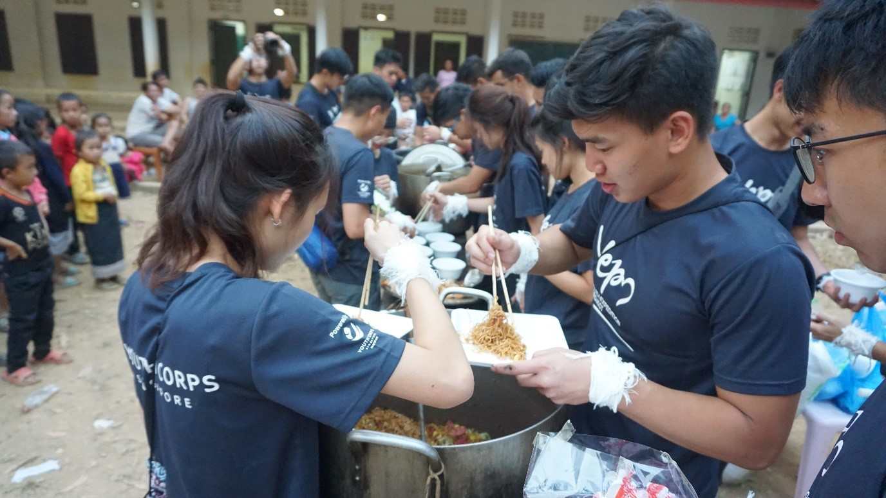

LeggoLaos 2020 promo video
On the 4th of January 2020, 23 SUTDents (2 AMAZING trip leaders and 21 not so bad members) embarked on a journey to Nong Luang Village, Vientiane, Laos. The trip lasted for two weeks with an eleven day homestay at the village and left a huge imprint in many of our hearts.

LeggoLaos 2020 Team Photo at Departure Hall
On a typical day in the village, our mornings start with the construction of the school fence. Alongside with 2 to 3 other villagers who oversaw the construction process, we dug holes, mixed cement, layered bricks and had fun together. During our 2 weeks in Laos, we managed to build a cement fence at the entrance of the school. It was fruitful to see the construction outcome of what we achieved.
Layering the bricks with cement
Team photo with almost completed wall

Yes, we are the kind that takes pictures before eating
In the afternoon, our team gave the school children some basic English, Math and craft lessons. Due to the language barrier, it was an experience to be able to interact with children using hand gestures. It was touching to see that we were able to connect with them even without being able to communicate fluently with them. Of course, playing with the children was the highlight of the trip.
Playing ‘Catching’ after school hours

We are very lovable. Of course, the kids are too
After having so much fun with the kids, we will head back home and enjoy a scrumptious dinner brought to us by yet again our kind ‘Meh’. We would then have more free time to “chill”. Some “chill” activities include HTHT, stargazing, PT and let’s not forget, preparing materials for the following day. (We also have really cool showers and bond together by either playing mobile legends or… list is not exhausted ;)

We say “Khop Chai, Kin Know” (Thank you, eat rice!) before every meal to thank the ‘Meh’
On one of the days, we gave out the clothes we collected from the donation drive to the students in the school. Upon receiving the donated clothes, the children were happy. Even though the clothes they received might not be their size, they were still very happy to be given some clothing as they could gift them to their family. By being there to personally see their expression when receiving the donated clothes made us all feel empathetic. We did not know how a simple gift of second-hand clothing could mean a lot to them.
Giving out clothes we previously collected back in SG
On the last day at the village, we cooked and served them some local food and drinks. The villagers enjoyed our food and kept coming back for more servings. Our meal was special to them as they eat plain rice with simple condiments such as salt and sugar daily.
Meal preparation
Serving the villagers our very delicious cooking
Overall, we were happy to be able to put a smile on their faces and share a connection with the children. During the ceremony on the last day, the school principal made a toast to us and thanked us for our help. He was touched by our help and our effort into bringing joy into the village. He welcomed us back and hoped to see us again. Atlas came the goodbyes, the hardest part of the trip. Many of us cried, even the manliest man did. The kids brought us so much joy and we were devastated to part. Many of us made a promise to be back! The reason why we feel for these was more than just a “I miss you and I might not see you ever again” but rather it was knowing that that kids here would probably continue to live in poverty with no formal education. The kids there do have it bad, they would have live with occasional from visits by students which brings them joy, only to realise that we have to leave.
TBH, I cried more than the kids :’(
After a splendid 11 days, we headed to Luang Prabang for our R&R. Had amazing street food, did amazing activities such as Water Tubing, visiting water caves and the Blue Lagoon, walked amazing night markets and last but not least, enjoyed amazing night activities.
Yet another group shot, in front of Blue Lagoon
Having dinner right beside the river
This trip changed our lives. We learnt to be more grateful for what we have as it broadens our perspective on how we view third world countries. Moreover, we made many new friends and were able to put smiles on many faces. It was a memorable and touching experience.